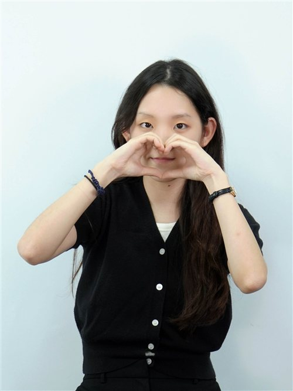
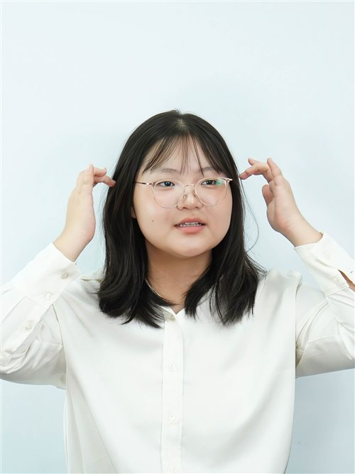

01
Agenda 1
Ensuring the Sustainable Management of Earth’s Orbit by Mitigating Space Debris and Optimizing Frequency Allocation
우주 물체 잔해물 저감 및 주파수 할당 최적화를 통한 지구 궤도의 지속가능한 관리
Read these before the conference.
Agenda 1
우주 물체 잔해물 저감 및 주파수 할당 최적화를 통한 지구 궤도의 지속가능한 관리
Agenda 2
6G 연구 가속화 및 글로벌 주파수 자원 배분을 통한 미래 연결성 증진

Honorable delegates, fellow chairs, and esteemed staff members, I am Hyo Min Lee, the Head Chair of ITU. It is a great honor to have you delegates and serve as a chair. In order for the debaters to proceed flawlessly, I will perform with my best to guarantee comfort and joy.
In a fast-changing society, technology works as a significant pivot. I strongly believe that it is a great chance for you to obtain a wide range of knowledge and a far-sighted perspective to be a suitable future citizen. Mentioning my overall Model United Nation journey, it started off as an embarrassing experience. I thought there would never be MUN in my life. But, eventually, through multiple trials and practices, I truly enjoy it. The key method is not grandiose nor surprising.
It is pulling out courage within the value you hold on to.
A single mistake does not change who you are. Rather than being discouraged, focusing on modifications to make or improvements you have achieved is needed.
I am honestly looking forward to delegates' bold speeches, courageous POIs, and respecting manners during three days of conference. Like KISMUN'2026 agenda, voice out your limitless values and possibilities and value your power of voice.
Best regards,
Hyo Min Lee
The Head Chair of International Telecommunication Union
KISMUN 2026

Honorable Chairs, distinguished delegates, and fellow staff,
Welcome to KISMUN. My name is Yujin Shin, and I am honored to serve as the Deputy Chair of ITU.
As this year's KISMUN slogan, "Value your voice, voice your value," says, always value your own words.
Whether your speech comes with hesitation or a trembling voice, every attempt you make in this committee is a valuable opportunity for growth.
Today, telecommunication serves as an essential medium that connects people and amplifies various voices. Just as communication technology bridges gaps, ITU provides a platform for you to express and expand your ideas. Grounded in scientific facts, fairness, and a progressive perspective, ITU strives for practical, innovative policy solutions.
Preparing for this committee has been an incredibly fun and rewarding for me as well. I am truly grateful to all of you for making this journey meaningful.
I encourage you to challenge yourselves and make your voices heard. Thank you!
Best regards,
Yujin Shin
Deputy Chair of International Telecommunication Union
KISMUN 2026